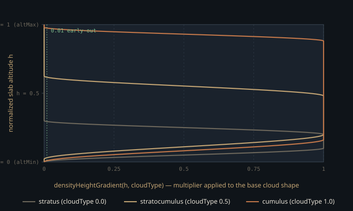

Monograph · Tree · ← Sitemap · Atmosphere & water includes
shaders
Atmosphere & water includes
Gerstner waves, cloud density fields.
Compiled every build, executed never
Of the 32 headers under `shaders/includes/`, two are reachable from exactly one stage each, and both of those stages sit in `shaders/_disabled/`. `water/gerstner.glsl` is included only by `_disabled/water/water.vert`; `cloud/cloud_density.glsl` only by `_disabled/cloud_shadow.comp`.
#include "water/gerstner.glsl"shaders/_disabled/water/water.vert:26#include "includes/cloud/cloud_density.glsl"shaders/_disabled/cloud_shadow.comp:9`_disabled/` is a naming convention, not a build exclusion. The C++ render library carries a filter that looks like one, but the regex matches nothing — there is no `_disabled` directory anywhere under `ohao/`, and that is the only line in the C++ tree that mentions the name:
list(FILTER RENDERER_SOURCES EXCLUDE REGEX "/_disabled/")ohao/render/CMakeLists.txt:12The shader side globs recursively with no filter at all, so `glslc` gets a rule for every `_disabled` stage — `build/shaders/` holds `_disabled_water_water.vert.spv` and `_disabled_cloud_shadow.comp.spv`, which no C++ ever loads.
file(GLOB_RECURSE SHADER_SOURCESshaders/CMakeLists.txt:9Compilation is incremental rather than unconditional — but the dependency list attached to *every* stage is the shared include glob, which contains both of these headers, so editing either dead header rebuilds every shader in the tree:
DEPENDS ${SHADER} ${SHADER_INCLUDES} ${CMAKE_BINARY_DIR}/shadersshaders/CMakeLists.txt:47Both headers are consequently **type-checked** whenever a shader or a tracked include changes, and **executed** never. A syntax error in either breaks `--target shaders` for the whole engine; a numerical error is invisible. The rest of this page is what that second clause has cost.
One degenerate parameter, one inverted dispersion relation
A Gerstner (trochoidal) wave displaces a flat grid horizontally as well as vertically, so crests sharpen and troughs flatten instead of staying sinusoidal. The header documents the standard parameterisation on one line:
// where k = 2π/λ, omega = sqrt(9.81 * k) * speed, Q = steepness / (k * A)shaders/includes/water/gerstner.glsl:22with wavenumber $k = 2\pi/\lambda$, amplitude $A$, and $Q$ the horizontal-pinch factor. `gerstnerDisplace` and `gerstnerNormal` then open with the same six-line preamble — $k$, $\omega$, $\mathbf{d}$, $f$, $A$, $Q$ — recomputed independently in each.
The first problem is not a disagreement with the comment but a missing field. `GerstnerWave` carries `dir`, `wavelength`, `steepness`, `speed` and no amplitude, so the preamble manufactures $A$ from the `steepness` field $s$ and feeds it straight back into the documented $Q$:
$s$ and $k$ cancel. $Q$ is identically 1 for every wave at every wavelength, whenever $A$ clears the $10^{-4}$ floor. That floor is reachable: `waveAmp` is a runtime push constant, `water.vert`'s smallest of the four amplitudes is $0.143a$ for `waveAmp` $a$, so the guard starts clamping below $a \approx 7\times10^{-4}$, and for a clamped wave $Q$ falls *below* 1, reaching 0 at $a = 0$.
The code implements its comment verbatim; the formula is simply degenerate, and what it costs is a knob. Wave steepness is $kA = s$ and the horizontal pinch fraction $QkA = s$ — the same number — so `steepness` is named correctly and does control steepness, but it fixes amplitude $s/k$ and pinch in lockstep. There is no tall smooth swell and no low sharp chop; every wave has one shape, uniformly scaled.
A Gerstner wave self-intersects once $QkA$ exceeds 1, so a lone wave here cusps at $s = 1$, not at $Q = 1$. The standard no-loop budget for a sum, $\sum_i Q_i k_i A_i \le 1$, collapses to $\sum_i s_i \le 1$, and the four steepnesses are $a$, $0.8a$, $0.5a$, $0.3a$:
waves[0] = GerstnerWave(vec2( 1.0, 0.0), 8.0, waveAmp * 1.0, 1.0);shaders/_disabled/water/water.vert:46so the surface starts looping above `waveAmp` $= 1/2.6 \approx 0.385$.
The genuine disagreement with the comment is dispersion. The comment specifies $\omega=\sqrt{gk}$, the deep-water relation; both copies of the preamble compute `sqrt(9.81 / k)`. Dimensionally $g/k$ is m²/s², so its root is a *speed*, used where rad/s belongs in the phase $f = k(\mathbf{d}\cdot\mathbf{p}) - \omega t$. Crest speed becomes $\sqrt{g}\,k^{-3/2}$ instead of $\sqrt{g/k}$ — scaling as $\lambda^{3/2}$ rather than $\lambda^{1/2}$. The two agree only at $\lambda = 2\pi \approx 6.28$ m; against `water.vert`'s 8, 12, 5 and 3 m waves the crest speeds are off by 1.27×, 1.91×, 0.80× and 0.48×. The wavelength spread is badly exaggerated — precisely the error class a still frame cannot show, and nothing here animates.
The Stokes term is a quarter period out of phase
The header adds a second-harmonic term labelled a Stokes 2nd-order correction:
disp.y += stokesAmp * sin(stokesPhase);shaders/includes/water/gerstner.glsl:38The coefficient $\tfrac12 kA^2$ is the textbook second-order amplitude. The phase is not. A Stokes expansion puts the second harmonic *in phase* with the fundamental — against this file's $A\sin f$ that would be $-\tfrac12 kA^2\cos 2f$, raising crests and flattening troughs symmetrically. Using $\sin 2f$ shifts it a quarter period: it vanishes at crest and trough ($\sin(\pm\pi)=0$), leaving both heights untouched, and instead lifts one flank while dropping the other. That is the fore-aft asymmetry the comment asks for, but it is a skew, not the crest-sharpening a Stokes wave describes. `gerstnerNormal` carries the matching analytic derivative, so displacement and shading normal stay consistent with each other even though neither matches Stokes.
`gerstnerNormal` returns a *perturbation*, not a normal — there is no unit-up term in it. The caller must seed the accumulator with geometric up before summing, which `water.vert` does. Drop that seed and flat water normalises a zero vector.
vec3 normAccum = vec3(0.0, 1.0, 0.0); // start from geometric upshaders/_disabled/water/water.vert:52A density field built entirely to defeat tiling
`cloud_density.glsl` is a Schneider-style (SIGGRAPH 2015) density function, and nearly every constant in it exists to stop one 128³ noise texture from reading as a grid. Altitude comes from a virtual Earth centre 6371 km below the origin rather than `worldPos.y`, so the height gradient follows a sphere instead of collapsing into a horizontal band when the camera looks up:
float posAlt = length(worldPos - CLOUD_EARTH_CENTER) - CLOUD_EARTH_RADIUS;shaders/includes/cloud/cloud_density.glsl:58Normalised altitude $h$ drives a per-archetype vertical profile built from four control points and two smoothsteps. The archetype vectors blend by weights forming a partition of unity across `cloudType` ∈ [0,1], so 0, 0.5 and 1.0 land on pure stratus, stratocumulus and cumulus with continuous interpolation between.

Everything after that is scale-ratio engineering. Base noise is sampled at 0.000015 per world unit, so the texture repeats every 66,667 world units (~67 km); a second base layer runs at 0.0000356, a frequency ratio of 2.373:
vec3 baseUVW2 = worldPos * 0.0000356 + windOffset * 1.3;shaders/includes/cloud/cloud_density.glsl:96The file's header comment calls that ratio incommensurable and the combined repeat "effectively infinite". It is neither: $0.0000356/0.000015 = 178/75$ in lowest terms, so the layers realign after exactly 75 tiles of the first — 5,000,000 world units, 5,000 km. Finite and computable, but past any draw distance, so the intent holds even though the arithmetic does not.
Both layers are then domain-warped by a vector read from the `.gba` channels of the *same* 3D texture at a much lower frequency — and the two warps are not the same warp. Layer 1 is warped at 0.0000018, roughly one eighth of its 0.000015 base, with amplitude 0.10 — 6.7 km of peak-to-peak displacement — and its warp scrolls at 5% of the wind offset:
vec3 warp = (warpRaw - 0.5) * 0.10; // ~6.6km displacement in worldshaders/includes/cloud/cloud_density.glsl:88Layer 2 is warped at 0.0000025 against its own faster 0.0000356 base — one fourteenth, not one eighth — with amplitude 0.08, about 2.2 km, and it carries no wind offset at all, so that warp field is pinned in world space while everything layered over it drifts:
vec3 warp2Raw = texture(noiseTexture, worldPos * 0.0000025 + 0.5).gba;shaders/includes/cloud/cloud_density.glsl:98The weather map is sampled at two scales (~80 km and ~26 km, ratio 3.04) for the same reason; only its `.r` coverage and `.g` cloud-type channels are read, never the `.b` precipitation channel the binding comment documents.
Density is Schneider's remap rather than a threshold, and the *direction* of each remap repays reading. The base-shape step maps the `.r` Perlin–Worley channel from $[-(1-w),\,1]$ into $[0,1]$, where $w$ is the Worley FBM assembled from `.gba`:
float baseCloud = cloudRemap(noise.r, -(1.0 - worleyFBM), 1.0, 0.0, 1.0);shaders/includes/cloud/cloud_density.glsl:109Because that lower bound sits below zero, this is a dilation, not an erosion: it evaluates to $(r+1-w)/(2-w)$, which is $\ge r$ for every $w \in [0,1]$ and lifts the field most where the Worley FBM is lowest. The low-frequency Worley adds body here. Carving happens later, in the detail stage, where the lower bound is positive.
Detail erosion is skipped wholesale when `cheapSample` is set, and the shadow march takes that path for all 16 of its vertical steps: erosion changes the silhouette, and a shadow map integrates that away. The rejected alternative — one sampling path for everything — puts the two skipped fetches back, eight texture fetches per surviving sample instead of six, for detail nothing downstream can resolve. The header advertises the cheap path as "3x cheaper"; by fetch count it is nearer 1.3×, and since the stage never runs, nothing in the tree has measured either number.
if (cheapSample) return clamp(baseCloud * densityScale, 0.0, 1.0);shaders/includes/cloud/cloud_density.glsl:122When erosion does run, its direction flips with altitude. The blend weight `clamp(h * 5, 0, 1)` is fully inverted only at $h = 0$, fully upright from $h = 0.2$ upward, and interpolates linearly across the bottom fifth of the slab — wispy undersides and crisp tops from a single noise fetch:
float detailMod = mix(1.0 - detailFBM, detailFBM, clamp(h * 5.0, 0.0, 1.0));shaders/includes/cloud/cloud_density.glsl:135That modulator becomes the *lower* bound of a second remap, and this bound is positive, which is what makes this the step that carves: anything at or below $0.35\,\text{detailMod}$ drops to zero while the top of the range stays at 1, so interiors survive and thin edges are eaten away.
float finalCloud = cloudRemap(baseCloud, detailMod * 0.35, 1.0, 0.0, 1.0);shaders/includes/cloud/cloud_density.glsl:138The stale contract, and the receiver with no producer
The header declares its Earth constants must match `cloud.comp`.
// Earth geometry (must match cloud.comp)shaders/includes/cloud/cloud_density.glsl:13`cloud.comp` has never had Earth geometry to match. The literal 6371000 has been introduced exactly once in this repository's history, in this header; the pre-rewrite `cloud.comp` ray-marched a flat slab in world Y, and the current one is a 2D layer with analytic FBM that includes `phase.glsl` rather than this header and finds its cloud plane by planar ray intersection:
float t = (cloudAlt - ro.y) / rd.y;shaders/_disabled/cloud.comp:105The header and that rewrite landed in the same commit, `1bd2b27`, so the contract was stale on arrival — a shared constant declared against a consumer that never used it.
The consumer end of cloud shadows, by contrast, is fully built in live code. `deferred_lighting.frag` samples a shadow map at set 0 binding 13 behind flag bit 16 and floors it so shaded ground never goes black:
cloudShadow = max(cloudShadow, 0.3); // never pitch-blackshaders/core/deferred_lighting.frag:321and `DeferredLightingPass` raises that bit from whether a view was handed to it:
if (m_cloudShadowView != VK_NULL_HANDLE) m_params.flags |= 16; // Cloud shadowsohao/render/deferred/deferred_lighting_pass.cpp:175`setCloudShadow` has no callers anywhere in the tree, so bit 16 is never set and binding 13 always resolves to the fallback view. `SkyPass::setCloudBuffer` is in the same state. The feature is a receiver, a switch and a disabled producer, with the connecting call missing.
Why one of these headers cannot be co-included
The two files differ sharply in namespace discipline, which constrains where each can go. `gerstner.glsl` declares a bare file-scope `const float PI`; three other headers under `includes/` define that name, two of them as macros:
#define PI 3.14159265359shaders/includes/common/math.glsl:17#define PI 3.14159265359shaders/includes/lighting/phase.glsl:11A stage that pulls in either macro before `gerstner.glsl` expands its declaration to `const float 3.14159265359 = …` and fails to compile; `lighting/ibl.glsl` spells `PI` as a plain `const float` and would collide by redeclaration instead. `water.vert` compiles only because it includes nothing else.
`cloud_density.glsl` is better behaved but not clean. Its constants and its helper are namespaced — `CLOUD_EARTH_RADIUS`, `CLOUD_EARTH_CENTER`, `cloudRemap` — and it declares no `PI`, so it has no collision with any of the common headers. Its two entry points, `densityHeightGradient` and `sampleCloudDensity`, are unprefixed and would still collide with any same-named function a host stage already has. One header collides with the engine's most-included math headers; the other is two prefixes short of portable.
Contracts
- `gerstnerNormal` returns a perturbation; the caller must seed the accumulator with `vec3(0,1,0)` before summing waves, or flat water normalises a zero vector.
- $Q = 1$ is structural, not tunable, and `steepness` sets amplitude and crest pinch together — they cannot be separated without adding an amplitude field. The summed no-loop budget is $\sum s_i \le 1$; with `water.vert`'s weights that caps `waveAmp` at 0.385.
- `gerstner.glsl` cannot be co-included with `common/math.glsl`, `lighting/phase.glsl` or `lighting/ibl.glsl` until its `PI` is removed.
- The "must match cloud.comp" comment was stale the day it was written: no version of `cloud.comp` has ever used Earth geometry, and the current one does not include this header.
- The shadow march passes `cheapSample = true` on all 16 steps and is budgeted on skipping the erosion fetches; the deferred consumer floors the result at 0.3 regardless of accumulated density.
- Neither file is exercised at runtime, and both are recompiled whenever any tracked include changes — they cannot rot syntactically, and cannot be validated numerically without re-enabling a consumer.
Source files
shaders/_disabled/water/water.vertshaders/_disabled/cloud_shadow.compohao/render/CMakeLists.txtshaders/CMakeLists.txtshaders/includes/water/gerstner.glslshaders/includes/cloud/cloud_density.glslshaders/_disabled/cloud.compshaders/core/deferred_lighting.fragohao/render/deferred/deferred_lighting_pass.cppshaders/includes/common/math.glslshaders/includes/lighting/phase.glslParent hub for the full pipeline narrative; this page is the file-level design unit. Sitemap · hover glossary terms anywhere.